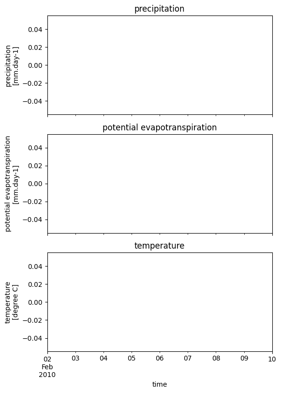

Tip
For an interactive online version click here:

Plot Wflow forcing#
HydroMT provides a simple interface to model forcing data from which we can make beautiful plots:
Forcing model layers are saved to model
forcingcomponent as adictofxarray.DataArray
Load dependencies#
[1]:
import xarray as xr
import matplotlib.pyplot as plt
import hydromt
from hydromt_wflow import WflowModel
Read the model#
[2]:
root = "wflow_piave_subbasin"
mod = WflowModel(root, mode="r")
Plot model forcing#
Here we plot the model basin average forcing.
[3]:
# read wflow forcing; mask region outside the basin and compute the basin average
# NOTE: only very limited forcing data is available from the artifacts
ds_forcing = xr.merge(mod.forcing.values()).where(mod.grid["wflow_subcatch"] > 0)
ds_forcing = ds_forcing.mean(dim=[ds_forcing.raster.x_dim, ds_forcing.raster.y_dim])
[4]:
# plot axes labels
_ATTRS = {
"precip": {
"standard_name": "precipitation",
"unit": "mm.day-1",
"color": "darkblue",
},
"pet": {
"standard_name": "potential evapotranspiration",
"unit": "mm.day-1",
"color": "purple",
},
"temp": {"standard_name": "temperature", "unit": "degree C", "color": "orange"},
}
[5]:
n = len(ds_forcing.data_vars)
kwargs0 = dict(sharex=True, figsize=(6, n * 3))
fig, axes = plt.subplots(n, 1, **kwargs0)
axes = [axes] if n == 1 else axes
for i, name in enumerate(ds_forcing.data_vars):
df = ds_forcing[name].squeeze().to_series()
attrs = _ATTRS[name]
longname = attrs.get("standard_name", "")
unit = attrs.get("unit", "")
if name == "precip":
axes[i].bar(df.index, df.values, facecolor=attrs["color"])
else:
df.plot.line(ax=axes[i], x="time", color=attrs["color"])
axes[i].set_title(longname)
axes[i].set_ylabel(f"{longname}\n[{unit}]")
# save figure
# fn_out = join(mod.root, "figs", "forcing.png")
# plt.savefig(fn_out, dpi=225, bbox_inches="tight")
